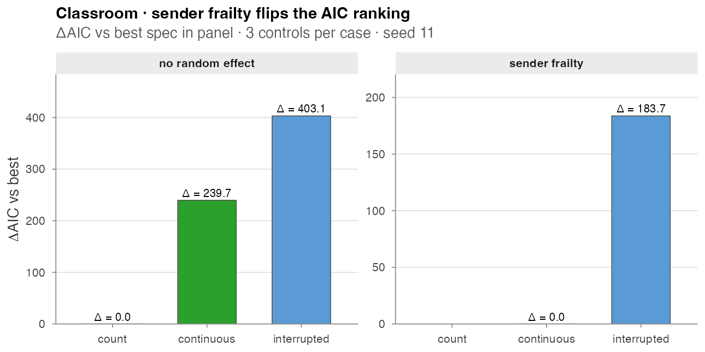
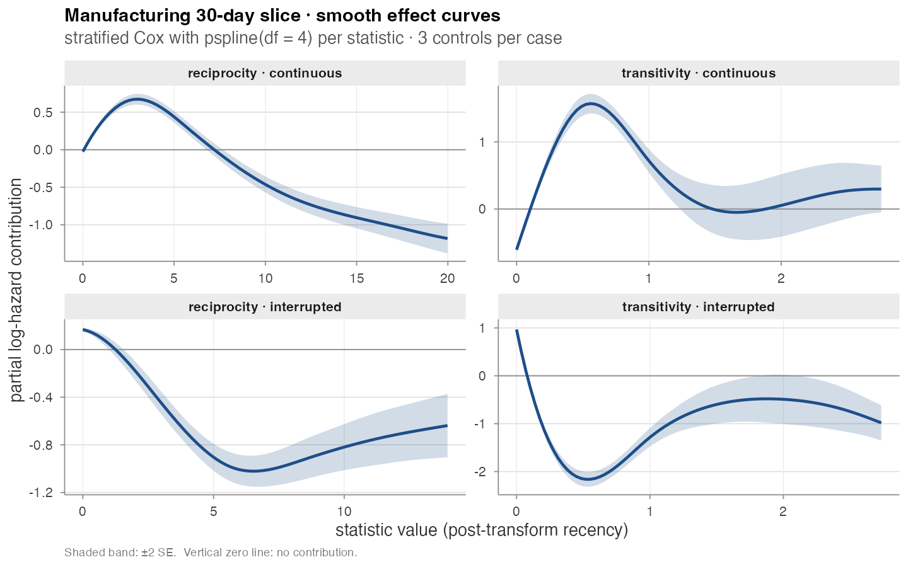

Real-data analysis
Three reproducible analyses on the bundled datasets. Every numerical
and graphical output below is produced by
paper/wiki/experiments/realdata.R.
Classroom · sender frailty flips the AIC ranking
The central methodological lesson of Juozaitienė & Wit (2024):
without an actor-heterogeneity correction the *_count
family silently absorbs sender activity differences, so it dominates the
AIC table even when timing variants are the better description of the
dynamics. Adding a Gamma survival::frailty() on the sender
flips the ranking.
data(classroom_events)
specs <- list(
count = c("reciprocity_count", "transitivity_count"),
continuous = c("reciprocity_time_recent", "transitivity_time_recent"),
interrupted = c("reciprocity_time_recent_interrupted",
"transitivity_time_recent_interrupted"))
compare_models(classroom_events, specs, n_controls = 3, seed = 11)
#> model n_terms n_obs log_lik AIC delta_AIC
#> 1 count 2 691 -5248.2 11880.5 0.0
#> 2 continuous 2 691 -5368.1 12120.2 239.7
#> 3 interrupted 2 691 -5449.8 12283.6 403.1
compare_models(classroom_events, specs, n_controls = 3, seed = 11,
random_effects = "sender")
#> model n_terms n_obs log_lik AIC delta_AIC
#> 1 continuous 2 691 -5177.7 11776.8 0.0
#> 2 interrupted 2 691 -5269.4 11960.5 183.7
#> 3 count 2 691 NA NA NA # convergence failure
Two findings worth flagging:
- Count “wins” naively by 240 AIC over continuous (left panel). This is the trap the count family puts you in on datasets with heterogeneous senders.
-
With sender frailty (right panel) the count
specification no longer fits —
coxph(... + frailty(sender, ...))fails its inner Newton–Raphson update once the random effect absorbs the activity differences. Continuous overtakes interrupted by 184 AIC points, matching Table 3 of Juozaitienė & Wit (2024).
Total wall-clock for the two compare_models calls: ~3
minutes. Driver:
paper/wiki/experiments/realdata.R, section (a).
Manufacturing · smooth effect curves
A stratified Cox model with pspline(stat, df = 4) on
four endogenous statistics (reciprocity_time_recent,
transitivity_time_recent, and the interrupted variants of
each), fit on the first 30 days of the radoslaw_email
dataset (10,776 events, 151 actors) with three controls per case:
data(radoslaw_email)
re30 <- radoslaw_email[radoslaw_email$time < 30, ]
re30 <- re30[re30$sender != re30$receiver, ]
stat_names <- c("reciprocity_time_recent",
"transitivity_time_recent",
"reciprocity_time_recent_interrupted",
"transitivity_time_recent_interrupted")
cc <- sample_non_events(re30, n_controls = 3, seed = 11)
feat <- compute_endogenous_features(cc, stats = stat_names)
fit <- survival::coxph(
survival::Surv(rep(1, nrow(feat)), event) ~
pspline(reciprocity_time_recent, df = 4) +
pspline(transitivity_time_recent, df = 4) +
pspline(reciprocity_time_recent_interrupted, df = 4) +
pspline(transitivity_time_recent_interrupted, df = 4) +
survival::strata(stratum),
data = feat, method = "breslow")
The four panels are not redundant:
- Continuous variants (top row) show the canonical “boost-then-decay” shape — a recent event raises the hazard briefly, then the contribution falls off and turns negative.
- Interrupted variants (bottom row) start near zero, dip to a pronounced minimum, and partially recover. This is the cycle-closure-reset behavior the interrupted family is built to expose: once the closing event fires the statistic snaps to a fresh state, and the partial effect on subsequent events reflects that reset.
Fit wall-clock: ~40 s. Driver: section (b) of the same script.
CollegeMsg · first 30 days
A sanity check on the newly bundled college_msg dataset
(60k IMs, 1899 users, 193 days; see Datasets). The first 30 days alone hold 22,265
messages across 1,086 users:
data(college_msg)
cm30 <- college_msg[college_msg$time < 30, ]
compare_models(cm30, specs, n_controls = 1, seed = 11)
#> model n_terms n_obs log_lik AIC delta_AIC
#> 1 count 2 22265 -6775 13554 0
#> 2 continuous 2 22265 -14982 29968 16414
#> 3 interrupted 2 22265 -15059 30122 16567The same pattern as Classroom — *_count “wins” by tens
of thousands of AIC points because CollegeMsg has dramatic activity
heterogeneity (see the actor-degree panel on the Datasets page). This is the kind of dataset
where the sender-frailty correction is not optional; the naive ranking
is not a reflection of the dynamics, it is a reflection of who happens
to be highly active in the data.
Driver: section (c) of the same script. Runtime: ~30 s.